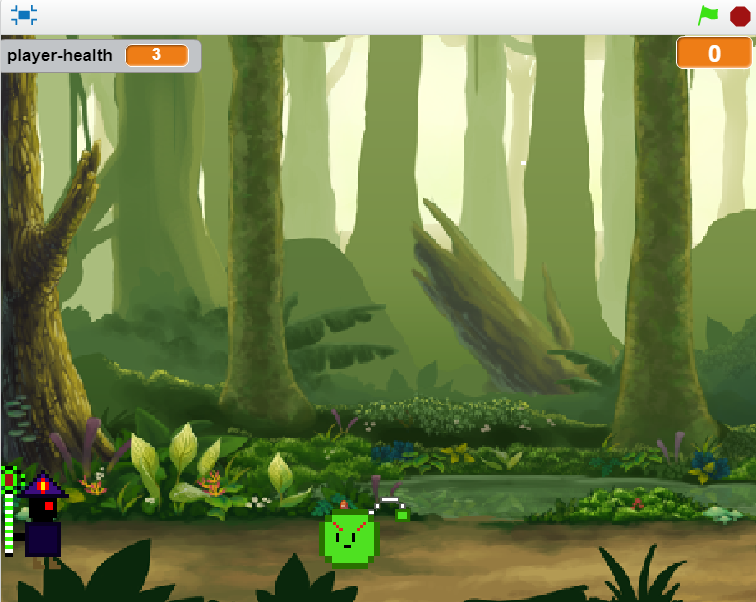

Game Project: Hero Trial

Description of the Game
The purpose of the game is to eliminate as many monsters as you can
while trying to stay alive. Initially, there were supposed to be two
classes; however, we ran into some complications so the only class that
is currently available is the mage. The scoring system is based off of
how many monsters you've attacked and eliminated. The usage of random-
ness occurs in the script of the monster, in which their time to spawn is
random. The game gets difficult when the player reaches a total of 15
points. At that moment, a message will appear, notifying the player that
the game will get harder; specifically, the monsters will appear more fast
and often. When the player reaches a total of 30 points, a message will appear,
notifying the player that they have won the game. Since the player has a total
of three lives, the game ends whenever the player gets hit by a monster three times.
Reflection Piece
The inspiration behind the game was behind my partner Clement's childhood
dream of always wanting to be a hero, hence the title "Hero Trial". Also
the majority of the design of the game was based off of a mobile game
"Will Hero". One successful point within the development of the game was
how we managed to create our own pixelated sprites. Another successful
point of the game was the movement of the sprite, which made it possible
to avoid the monsters. However, as we spent the majority of our time creating
the sprites and the aesthetic of the game, we were left with little time to
program our actual game and ended up only being able to complete the mage
route. Another obstable that occured was the movement of the character, which
was eventually resolved after at least two days and again, left us with
insufficient time to develop the actual game. If we had more time, we would
definitely complete the warrior route as well as making more stages and a
boss stage, which we have the sprite for but never got to implement it as
there were too many complications to handle last minute.
Important Algorithm
This is an essential algorithm to our game because without it, the user
wouldn't be able to move and it would be difficult to beat the game. It consists
of if-else commands that allow the player to move throughout the map freely.
Usage of More Blocks